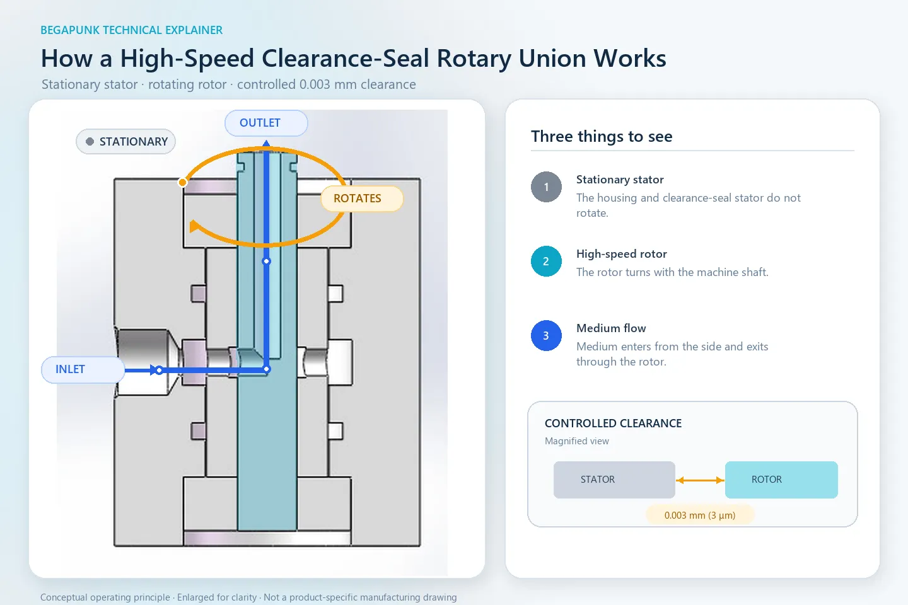

ロータリージョイントの選定・取付・シール技術ガイド
これらの実用資料を活用して、使用条件の整理、シール構造の比較、一般的な取付ミスの回避、型式選定に必要な情報の確認ができます。
課題から選ぶ
次に確認する技術項目を選ぶ
解決したい課題から始め、一般的な技術情報から型式比較または用途確認へ進みます。
実務ガイド
ロータリージョイントの技術資料
公開済みの4つのガイドでは、作動原理と、型式選定、取付、シール検討の前に必要となる主な判断項目を解説します。


次にできること
型式を比較し、実機への取付例と出荷前検査工程を見る
以下のページで候補型式を絞り込み、実機への組込み例や完成品の検査工程を確認できます。
ロータリージョイントの型式を比較する
流路数、圧力、回転数、取付方式、材質、代表用途を比較し、最も近い型式候補を探せます。
型式を比較する →実機への組込み例を見る
CNC治具、キャッピング機、レーザー管切断機の後方チャックにロータリージョイントを組み込んだ例をご覧いただけます。
組込み例を見る →出荷前検査工程を見る
完成したすべての空圧用製品を、梱包前に各流路ごとに圧縮空気1.0 MPaで漏れ検査する工程をご覧いただけます。
検査工程を見る →機械に合う型式選定でお困りですか？
初回のお問い合わせは、型式、写真、図面のいずれか一つで十分です。分かる範囲で、流体、圧力、回転数、流路数、取付条件もお知らせください。